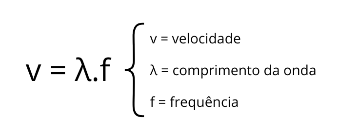

O que são ondas eletromagnéticas?
Ondas eletromagnéticas são oscilações formadas por campos elétricos e magnéticos variáveis, que se propagam tanto no vácuo quanto em meios materiais. Elas são ondas tridimensionais e transversais que viajam na velocidade da luz, transportando exclusivamente energia.
Como elas se propagam?
Essas ondas não necessitam de um meio material para se propagar, ao contrário das ondas sonoras, que precisam de ar, água ou outro meio físico. A propagação ocorre através da oscilação dos campos elétricos e magnéticos.
Principais características:
Frequência e Comprimento de Onda: A frequência define o tipo da onda e sua energia. Ondas com maior frequência, como os raios X, têm mais energia e são mais penetrantes.
Ionização: Ondas com alta frequência, como os raios X, podem ionizar átomos, o que pode ser prejudicial à saúde.
Amplitude: é a altura máxima da onda e está relacionada à intensidade da energia que ela carrega. Em ondas eletromagnéticas, uma maior amplitude significa mais energia.
Crista: É o ponto de máxima amplitude em uma onda, representando o pico da oscilação.
Vale: É o ponto de mínima amplitude, o oposto da crista.

Fórmula para calcular a velocidade da onda:

Diferença Entre Ondas Eletromagnéticas e Sonoras
A principal diferença entre ondas eletromagnéticas e sonoras é que as últimas necessitam de um meio material (como ar ou água) para se propagar, enquanto as ondas eletromagnéticas podem viajar no vácuo. Além disso, as ondas sonoras são mecânicas e as ondas eletromagnéticas são não mecânicas.